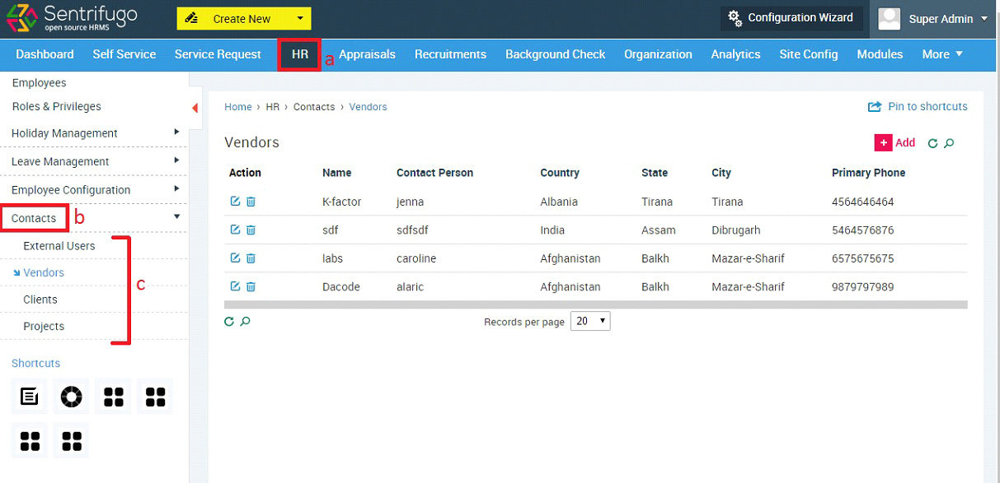

Additional Features
Upload Employees’ Profile Photo as HR
HR can now upload employees’ profile photos.
HR Configuration Wizard
The configuration wizard has been designed to aid the user in setting up the application in the right manner and to avoid the confusion regarding how to proceed further after a certain step.
It consists of 3 steps:
- Configure Leave Types: Create leave types (E.g. Sick, Vacation) and allocate the number of days for each leave type.

- Configure Holidays: Create holiday groups and assign holidays to each group.

- Appraisals: Add appraisal parameters (E.g. KPI, KRA) and allot questions for each parameter.
Contacts
You can now manage and store your organization’s external users, vendors, and clients’ details all in one place.

- Click HR in the top menu
- Click Contacts on the left menu panel
- You can click on any contact to add/view External Users/Vendors/Clients.